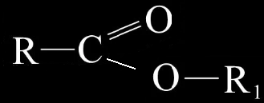
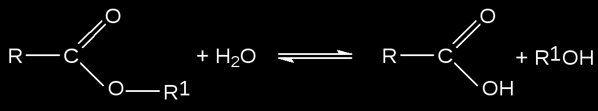
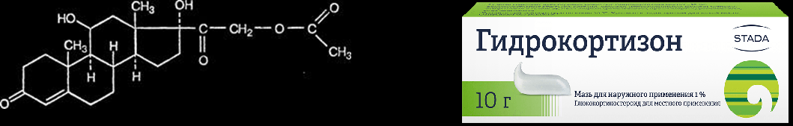
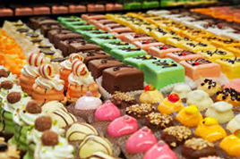

Сложные эфиры карбоновых кислот и их применение
О сложных эфирах
Сложные эфиры являются важнейшими производными карбоновых кислот, которые можно получить при взаимодействии этих кислот со спиртами.
Общая формула сложных эфиров:

В общем виде реакцию их получения можно представить так:
Физические свойства
Сложные эфиры низших карбоновых кислот (с числом атомов углерода до 8) - летучие жидкости или твёрдые вещества, плохо растворяющиеся в воде, с приятным запахом, легче воды.
Сложные эфиры высших спиртов и карбоновых кислот - твёрдые, воскоподобные вещества.
Распространение в природе
Сложные эфиры жироко распространены в природе. Ароматы цветов, ягод, плодов и других частей растений обусловлен присутствием в них сложных эфиров.
Последние являются ведущими составными частями эфирных масел (летучих веществ, которые можно выделить из определённого вида растений).
Номенклатура и изомерия
Названия сложных эфиров производятся от названий образовавших их кислот и спиртов. Например:
 метилацетат (метиловый эфир уксусной кислоты)
метилацетат (метиловый эфир уксусной кислоты)
Сложные эфиры изомерны карбоновым кислотам с тем же числом углеродных атомов.
Химические свойства
Функциональная группа сложных эфиров характеризуется наличием в ней карбонильной группы (С=О), которая и определяет химические свойства, сходные со свойствами альдегидов и карбоновых кислот.
Реакции этерификации - реакции между карбоновой кислотой и спиртом, основным продуктом которой является сложный эфир.
Реакции этого вида протекают медленно, поэтому их проводят в присутствии сильных неорганических кислот, обычно серной. Каталитическое действие оказывают ионы водорода.
Другим продуктом реакции этерификации является вода, образующаяся за счёт гидроксила карбоксильной группы кислоты и водорода группы -ОН спирта.
Гидролиз является наиболее характерной реакцией сложных эфиров. При нагревании эфира в присутствии неорганической кислоты и воды происходит его расщепление по месту связи C-O на кислоту и спирт:

Гидролиз - реакция, противоположная реакции этерификации:
Карбоновая кислота + спирт = сложный эфир + вода
Сложные эфиры вступают в реакции:
— со спиртами (реакция переэтерификации)
CH3-C(O)-O-C2H5 + CH3OH↔CH3-C(O)-O-CH3 + C2H5OH (t0, H+);
— с аммиаком
CH3-C(O)-O-C2H5 + NH3→CH3-C(O)-NH2 + C2H5OH (t0);
— галогенирования, если в составе углеводородного радикала имеются кратные связи
CH2=CH-C(O)-O-CH3 + Br2→ Br-CH2-C(Br)H-C(O)-O-CH3.
О применении сложных эфиров
В медицине
Сложные эфиры часто входят в состав эфирных масел.
Большинство эфирных масел обладают противомикробными и снимающими спазм (сжатие) гладкой мускулатуры (она находится в области внутренних органов и кровеносных сосудов) свойствам. Многие эфирные масла оказывают противовоспалительное действие.
Кроме того, они оказывают положительное действие на общий обмен веществ в организме человека, угнетают или повышают активность центральной нервной системы, влияют на работу сердечно-сосудистой системы. Отдельные эфирные масла стимулируют или угнетают дыхательную систему, оказывают отхаркивающее действие.
Токсичность (ядовитые свойства) большинства эфирных масел, особенно, при их ингаляционном (при вдыхании) и наружном применении невысока. Однако некоторые эфирные масла достаточно токсичны и при введении внутрь оказывают гемолитическое действие (склеивают красные кровяные тельца – эритроциты, что вызывает малокровие или анемию).
Из организма эфирные масла выводятся через почки, увеличивая при этом объем выделяемой мочи (диурез), а также через легкие, с чем связано их местное антисептическое и прямое отхаркивающее действие.
Эфирные масла широко применяются в фармацевтической промышленности при изготовлении лекарственных форм для улучшения их вкуса, запаха, консистенции и других свойств. Наиболее широко используются следующие лечебные препараты, содержащие эфирные масла: настойки, экстракты и масла арники, валерианы, аниса, мяты перечной, зверобоя, эвкалипта, ромашки аптечной и так далее.
Примеры препаратов на основе сложных эфиров
1.Гидрокортизон ацетат
При местном применении (в виде I % мази при аллергических заболеваниях кожи) и введении в виде суспензии в полость суставов оказывает сильное противовос¬палительное и антиаллергическое действие без системных побочных явлений.

2.Флуметазон пивалат
Применяют местно в виде 0,02 % мази или крема при экземах, нейродермите, зуде, воспалительных реакциях кожи и слизистых оболочек.
3.Флутиказон пропионат
Применяют наружно для лечения воспалительных и аллергических заболеваний кожи и интраназально для лечения ринитов, ингаляционно при бронхиальной астме.
В парфюмерной промышленности
Сложные эфиры карбоновых кислот дают самые разнообразные оттенки запахов, от запаха тропических орхидей до характерного аромата фруктов.
Эти соединения в настоящее время без проблем синтезируются в лаборатории, например:
• Этилметанат (этилформиат, муравьиноэтиловый эфир), образующийся из этанола (этилового спирта) и метановой (муравьиной) кислоты – используется как отдушка для мыла; как компонент пищевых эссенций.
• Бутилэтанат (бутилацетат, уксуснобутиловый эфир) – из бутанола (бутилового спирта) и этановой (уксусной кислоты) – используется как экстрагент душистых веществ, душистое вещество в парфюмерии.
• Изобутилэтанат (изобутилацетат, уксусноизобутиловый эфир) образуется из 2-метилпропанола-1 (изобутилового спирта) и этановой кислоты. Оба последних эфира имеют сильный фруктовый запах и являются составной частью парфюмерных композиций с ароматом лаванды, гиацинтов и роз.
• Пентилэтанат (амилацетат, уксусноамиловый эфир) – из пентанола и этановой кислоты. Используется в парфюмерии. В разбавленном растворе имеет запах груш. Входит в состав фантазийных духов и служит растворителем в лаках для ногтей.
• Изопентилэтанат (изоамилацетат, уксусноизоамиловый эфир) – из 3-метилбутанола-1 и этановой кислоты. В разбавленном растворе имеет запах груш. Входит в состав духов.
• Метилбутанат (метнлбутират, маслянометиловый эфир) – из метанола (метилового спирта) и бутановой (масляной) кислоты. Запах его напоминает ранет.
• Этилбутанат (этилбутират; масляноэтиловый эфир) – из этилового спирта и бутановой кислоты. Он имеет характерный запах ананасов.
• Пентилбутанат (амилбутират, масляноамиловый эфир) – из пентанола (амилового спирта) и бутановой кислоты.
• Изопентилбутанат (изоамилбутират, масляноизоамиловый эфир) – из 3-метилбутанола-1 (изоамилового спирта) и бутановой кислоты.
Два последних эфира имеют запах груш.
• Заслуживают также внимания бензилметанат (бензилформиат), бензилэтанат (бензилацетат) и бензилбутанат (бензилбутират). Все эти эфиры образуются из ароматического бензилового спирта и соответствующих карбоновых кислот – метановой (муравьиной), этановой (уксусной) или бутановой (масляной).
В пищевой промышленности
Сложные эфиры входят в состав фруктовых эссенций. Фруктовыми эссенциями называют иногда очень сложные смеси различных синтетических веществ, обладающие приятным запахом фруктов. Их применяют в кондитерском производстве, при изготовлении фруктовых вод.

©2020 Игорь Забавин, Иван Хрипунов, Руслан Савельев